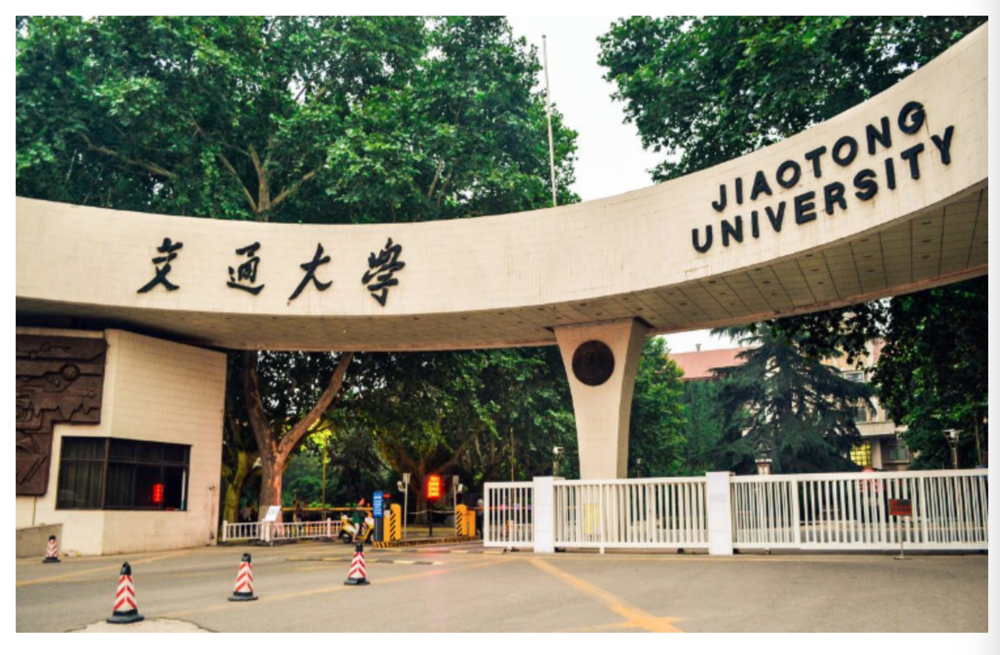
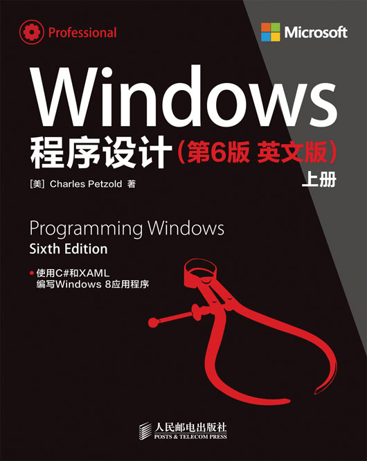
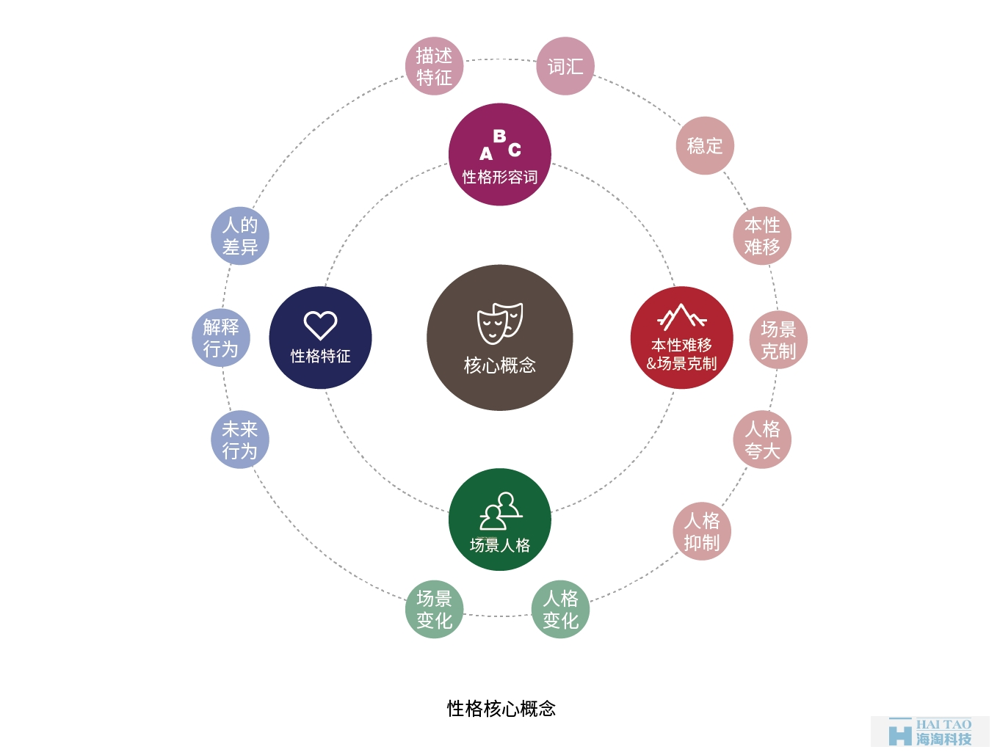
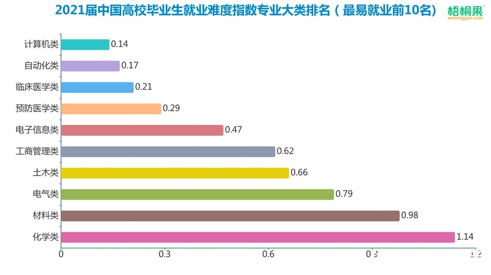

计算机学科即计算机科学与技术，是研究计算机的设计与制造和利用计算机进行信息获取、表示、存储、处理、控制等的理论、原则、方法和技术的学科。方法论是对计算机领域认识和实践过程中的一般方法及其性质特点、内在联系和变化规律进行系统研究的理论总结。
目录 |
在我大一得下学期，我上了C语言程序设计，对编程有了初步的认识，开始有了“学计算机专业就是学习编程”这样的片面印象。这种错误的想法使我在大一下的那一段时间例总是对自己所学的专业怀有一种不自信的想法，因为在当今这个科技进步的年代，计算机已经成为人类社会生产活动中不可或缺的工具，所以许多非计算机类的专业也有开设编程类的课程，这使我对自己专业所学的内容是否对我将来的发展产生帮助产生了怀疑。我感觉我们计算机专业学生能做的事情，其他专业像是软件工程、自动换等等也可以胜任。再加上我在网络上了解到程序员的竞争十分激烈，更使我产生了焦虑的情绪。
到了大二年级的时候，我遇到了一位在我大学时期对我起了深远影响的老师——李昊老师。李老师使我所在党支部的指导老师。在一次由我们党支部举办的专业介绍会上，李老师用通俗的方式详细地向我们绍了计算机专业是学什么的，将来有什么研究方向。在这一次地会议上，我知道了，之前我对计算机专业地认识师十分片面的，计算机科学与技术既包括对软件部分的开发，也包括对硬件部分的研究。在会上，李昊老师用一句话就十分简明形象地解答了我一直以来地疑惑：“别的专业是学习如何使用计算机来更好地为人类服务的，而我们计算机科学与技术的学生将来要做的是如何让计算机变得更加强大。”
现如今，经过经过了一年多的大学学习，我对计算机科学与技术这一专业已经有了一个比较清晰的认识。我一直想计算机考研为什么是数据结构、组成原理、操作系统、网络四门课，除了数据结构我认识到了它的重要性外，其他的理论课跟以后的“软件开发”有什么关系，而且这些理论课无一例外都是高学分课，后来我才知道，这些都是计算机基础，想成为一个好的科研人员或者高级码农，这些都是必备的，这些才是“计算机科学”，以前只看到了后面的“技术”两个字，我觉得“计算机科学与技术”专业中要学的“科学”要占80%，“技术”占20%。网上的各种大牛见的多了，看的多了，见的也多了，越来越觉得“编程”只是计算机的一部分，甚至是“冰山一角”，或者说只是一种实现或验证“科学”的工具（这里的科学不仅包括计算机，还有数学，物理，化学，生物等），但是编程还是很重要，并且大师级人物都是软硬通吃的，不仅对软件理论很熟悉，模电数电，组成原理，微机原理等硬件原理也十分了解，典型的例子就是著有经典的《windows程序设计》的Charles 的作者。
刚上大学时就听说计算机学的好的人，数学也好，但一直不知道它们之间有何种联系，而且大一的时候也有老师告诉我“数学不能扔，要经常拿出来做一做”，但是我一直也没理解。大二时，我发现线性代数应用是如此之广，高数更是哪里都会用到。以前只知道计算机教授是很多数学专业转过来的，或者像物理这种理科专业教授是数学专业转过来的，没想到甚至很多经济学老师也是从数学系转过去的，才体会到数学是一切科学的基础。
返回顶部刚上大学时，我以为上了大学就以为着解放，可以不用像在高中那样努力学习了。但是，大学课程的学习似乎并没由我想象中的那么轻松，甚至要投入比中学时跟多的时间和精力才能学好。回想起刚入大学时，我的班主任就对我们说过，在大学里要好好规划自己的人生，要想清楚自己向要做什么，要由自己的目标，不要虚度了大学四年的时光。因此，做一份个人的学业规划是十分由必要的。
我认为自己是一个内向的人。我平时喜欢在一个安静的地方学习，大多数时候喜欢一个人呆着，作自己喜欢的事情。曾经的我是一个容易急躁的人，但在大学的这段时间里，在一次又一次处理问题的过程中，我的抗压能力已经有了明显的提高。此外，我是一个学习能里较强的人，也有着较高的搜索信息的能力和自我管理能力，因为这些能力在现实的生活、学习和工作中都是很重要的，并且我能通过自己的努力和经验的积累来获得这些能力。
虽然受金融危机的影响，但计算机专业还是具有着良好的就业前景。选择计算机专业，在就业方面有三大特点：一是就业空间大，二是就业高工资，三是高就业。
企业是计算机人才需求的主体。近年来，计算机专业毕业生到企业从事计算机应用和技术开发的比例逐年增加，在经济发达地区已成为就业的主渠道。在全国约3000家大型企业中，只有5%的企业信息化建设进入成熟阶段，国有企业吸纳毕业生潜力巨大。高新技术企业发展迅速和要求员工素质高的特点，使其成为吸收计算机专业大学生的主要企业单位。外国公司涌入我国，需要招聘大批高素质的计算机人才，毕业生的就业选择和人才流动会更偏向外资企业。
it产业成为接收计算机专业毕业生的生力军。it人才是我国四大紧缺性人才之一。未来十年，我国电子商务人才、游戏开发人才、移动通信人才、ic技术人才、信息安全人才严重短缺。我国软件人才总量不足，结构也不合理，软件测试专业人员缺口高达20万，嵌入式软件工程师每年的缺口为15万左右。随着软件外包业的蓬勃发展，日、韩等小语种软件工程师十分紧缺，仅对日软件开发的人才缺口就达30万以上。全球it业重心正转向服务。2007年，我国软件和服务市场总值分别达到69亿美元和144亿美元，巨大的服务市场需要吸纳大量的计算机应用人才。
我认为，目前自己作为一名大学生，我的主要任务就是学习。因此，我应该将我的重心放在学习上。如果不好好学习，我就无法掌握完成工作所必须的技能，那么我将来要完成任何任务都将是“空中楼阁”。
1、认真学好专业知识和其他基础学科，坚信基础的东西一定是最重要的。注意提高自身的基本素质，通过参加各种社团等组织，锻炼自己的各科能力，同时检验自己的知识技能。
2、做一些兼职，社会实践活动，同时在课余时间从事一些与自己未来职业有关的专业类的工作，进一步提高自己的责任感、主动性。
3、证书大突破：考取英语四、六级。
1、开始尝试并学习写简历、求职信，了解社会需求。搜集与本人目标工作有关的信息，并通过信息渠道尝试和已毕业的校友交流思想。开始毕业前的申请，积极参加招聘，在实践中校验自己的知识积累。
2、预习或模拟面试，积极利用学校提供的条件，了解就业指导中心体统的用人公司资料信息，强化求职技巧，进行模拟面试等训练，尽可能作出较为充分准备的情况下进行演练，为自己以后找到理想的工作而努力。
返回顶部